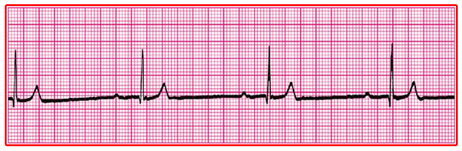
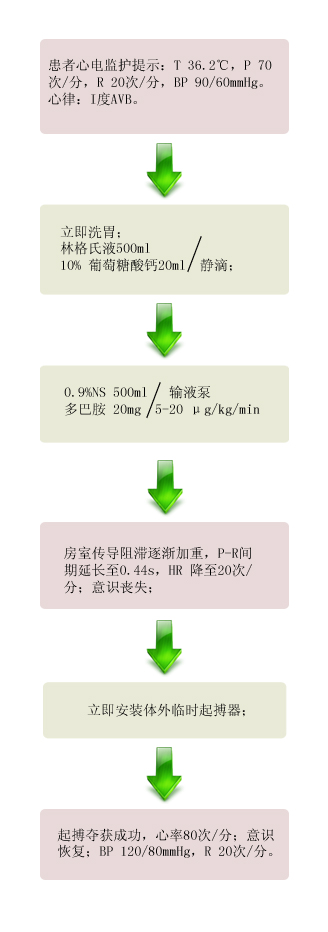

【病例摘要】
- 现病史：患者女性，22岁，自服异搏定半瓶2h。患者因心情不好于2h前自服异搏定半瓶（40mg/片，30片/瓶）。服药后无神志改变，无头晕、呕吐、心悸。
- 既往史：既往体健。否认肝炎、结核等病史。否认药物、食物过敏史。
- 查体：T 36.2℃，P 50次/分，R 20次/分，BP 90/60mmHg，神志清楚，自动体位，查体合作。面色微紫，两颊散在数个紫色大小不等、不凸出皮肤、压之不褪色、不规则斑点。双肺呼吸音清，HR 50次/分，律齐，各瓣膜听诊区未及杂音。腹部无阳性体征。四肢厥冷，无花纹。

【辅助检查】
- 心电图:

【诊断】
- 异搏定中毒 I度房室传导阻滞 低血压 休克前期
【事件】
